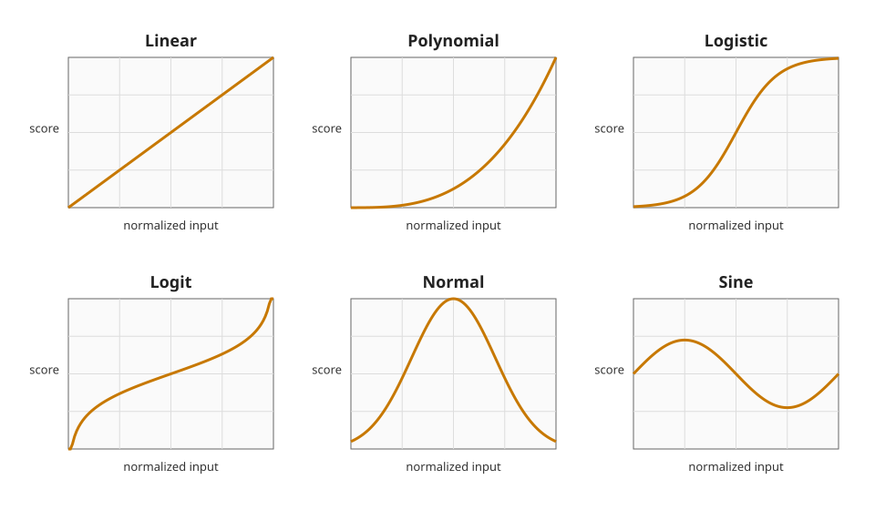

Curve explorer¶
Considerations turn a normalized world value into a score from 0 to 1. The curve does not
predict a complete behavior winner. It shows how one input helps or hurts one candidate before other
considerations, active actions, and decision rules are applied.
Curve families at a glance¶

| Curve type | Good mental model |
|---|---|
| Linear | A steady ramp up or down. |
| Polynomial | A ramp that can react early or only near an extreme. |
| Logistic | A soft threshold. |
| Logit | A very sharp central transition. |
| Normal | Prefer a middle band. |
| Sine | Repeat a rise and fall. |
The exact equations are in behavior and movement formulas.
Explore documented normal-melee considerations¶
Select an example and move the normalized-input slider. The graph and numbers use the documented
range and curve parameters for that consideration.
| Raw input | |
|---|---|
| Range | |
| Parameters | |
| Curve score |
Interpretation:
This is one consideration, not the final decision
The displayed value is one curve output. A behavior can have several considerations, and those
are combined with its base weight and runtime decision/action rules. The explorer therefore
must not be read as an attack probability.
Non-interactive examples¶
| Consideration | Range | Curve | What it illustrates |
|---|---|---|---|
| Slash cooldown | 0–5 seconds | Polynomial: \(M=1, K=3, C=0, B=0\) | The score rises slowly at first and more sharply as time passes. |
| Block distance | 0–375 units | Polynomial: \(M=-1, K=10, C=0, B=1\) | Close targets preserve a high score; distant targets are penalized sharply. |
| Block repeat timing | 0–6 seconds | Linear: \(M=10, K=1, C=0.85, B=0\) | A threshold-like delay before the behavior becomes attractive. |
| Wait fallback | 0–1 | Linear: \(M=0, K=1, C=0, B=0.25\) | A stable low fallback score. |
| Shove recent blocks | 0–4 | Polynomial: \(M=1, K=2, C=0, B=0\) | Recent blocking pressure makes Shove more attractive. |
| Overhead/Stab cooldown | 0–1 seconds | Polynomial: \(M=1, K=3, C=0, B=0\) | The score rises over a shorter range than Slash cooldown. |
| Feint randomness | 0–1 random value | Linear: \(M=1, K=1, C=0, B=0\) | A higher sample gives this one consideration a higher score, not a feint probability. |
If JavaScript is unavailable, this table and the formula page contain the same essential
interpretation.